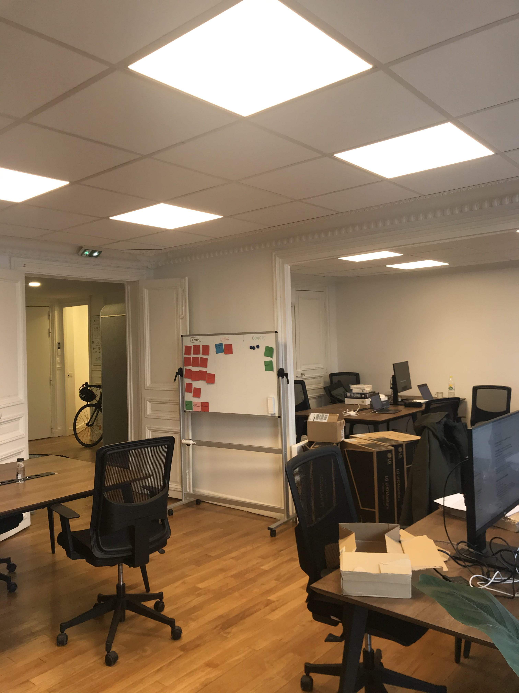

stage à Meili : JOURNAL DE BORD
JOUR 1

- de 9H à 10H: découverte des locaux, rencontre des employés puis explication du métier d'entrepreneur, des finances de l'entreprise (comment sont répartis les parts, les levées et les inves tisers...) du langage informatique et des taches que chaque équipe doit accomplir pour mener a bien chaque projets (deesign, écriture,codage...).
- 10H15 à 11H: réunion avec la rh et 2 des fondateurs, pour parler des objectifs de la semaines, ce qu'il reste a faire, des futures réunions et de l'entreprise en général ( employés, projets...)
- 11H à 12H: réunion avec le "core" (les développeurs) en appel caméra pour facilité la transmission avec les télétravailleurs pour présenter des nouveaux projets et débattre de ce qu'il serait le mieux de faire pour les prochain(e)s jours, semaines...
- 14H à 15H: conversation avec la meili integration pour connaitre en quoi consiste leurs métiers, que font-il, suivi par des exemples.
- 15H à 17H: début de l'apprentissage du code en html puis commencement de ce site internet qui va expliquer chacune de mes journées (journal de bord).
JOUR 2

- de 10H à 11H: complétion de la fiche 2 (identité de l'entreprise) et 5 (je présente un métier de l'entreprise) du livret de stage avec le président directeur général pour que cela puisse m'aider lors de mon oral
- 11H à 12H15 et 14H à 17H: continuation de ce journal de bord (améliorations, insertion d'images...) et début du jeu "swift playgrounds" consacré à l'apprentissage du code, reportage sur feuille des informations aquéris depuis le lundi 18 janvier.
JOUR 3

- 10H à 11H: améliorations du site (finitions) et commmencement du langage css , liste de ce qu'il me reste à finir (prendre photos, compléter fiche ..)
- 11H à 12H15: prise de note et plan complet avant de commencer à faire mon diaporama (quelles images je veux mettre, où, de quoi je veux parler principalement... )
- 13H15 à 14H15: complétions de la fiche 6 (je présente un métier de l'entreprise -> suite) avec le PDG et début de la fiche 7 (bilan du stage)
- 14H45 à 17H: prise en note de l'organigramme de l'entreprise, photos exterieur et interieur pour pouvoir les insérer sur le diaporama, capture d'écran du jeu "swift", et de ce code informatique, commencement du diaporama (support de la prestation orale)
JOUR 4

- 10H à 12H15: journée en télétravail : achèvement du diaporama ( 18 diapositives )
- 14H à 15H: construction de l'ogranigramme
- 15H à 17H: publication sur github du journal de bord et reportage de certaines informations sur le diaporama